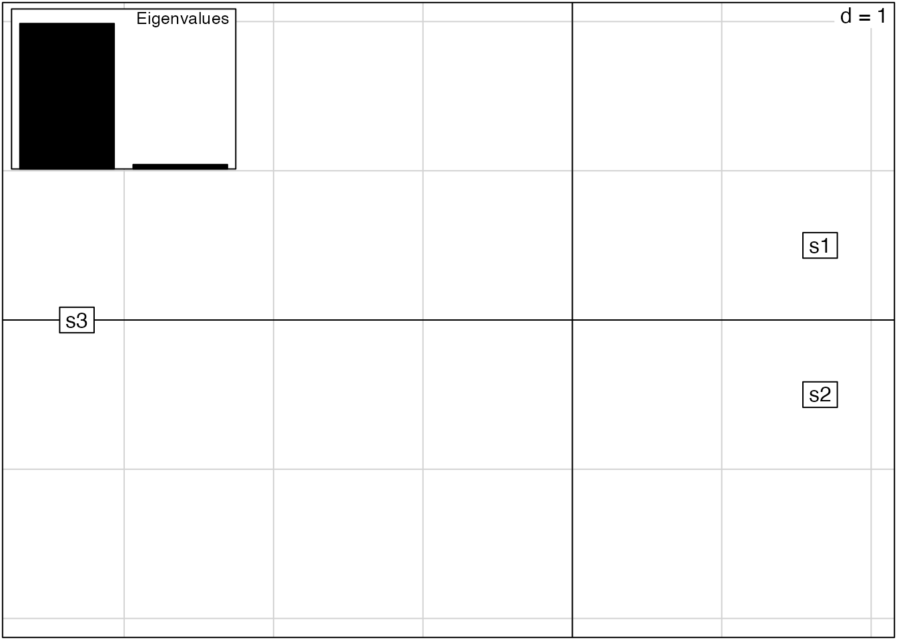

2 Diversité fonctionnelle
La diversité définie précédemment est dite neutre parce que les différences entre espèces sont les mêmes. L’identité des espèces n’a pas d’importance: deux individus sont de la même espèce ou d’espèces différentes, mais cette différence ne varie pas.
La définition de la rareté peut être généralisée pour prendre en compte la proximité plus ou moins grande des espèces (Leinster et Cobbold 2012).
On définit une distance entre toutes les paires d’individus (qui peut ne dépendre que de leurs espèces ou varier pour chaque individu). De façon équivalente, on peut écrire une matrice de distance ou placer les individus dans un espace multidimensionnel (la transformation est une Analyse en Coordonnées Principales: PcoA). On obtient ce type de données en calculant les distances entre individus en partir de leurs valeurs de traits fonctionnels (d’où le nom de diversité fonctionnelle) ou de n’importe quelle valeurs numériques multidimensionnelles (comme la distance entre pixels d’une image dans l’espace colorimétrique).
Les distances doivent être transformée en similarités. Classiquement:
- on normalise les distances entre 0 et 1 et on définit la similarité comme 1 moins la distance.
- ou (les propriétés mathématiques sont plus solides), on définit la similarité comme l’exponentielle négative de la distance. La similarité entre les espèces \(s\) et \(t\) est \(z_{s,t}=e^{-u d_{s,t}}\) où \(u\) est un réel positif qui fixe la décroissance de la similarité en fonction de la distance: plus \(u\) est grand, plus les espèces sont dissimilaires pour une même distance.
Un individu est complètement similaire à lui-même (distance nulle, similarité égale à 1).
Exemple: les distances entre les 3 espèces sont dans la matrice:
D <- matrix(
c(
0, 1, 5,
1, 0, 5,
5, 5, 0
),
nrow = 3)
colnames(D) <- rownames(D) <- names(C)Dans l’espace engendré par cette matrice de distance :
library("ade4")
D %>%
as.dist %>%
dudi.pco(scannf = FALSE, nf = 2) %>%
scatter
La matrice de similarité est obtenue en prenant l’exponentielle négative de la similarité, avec \(u=1\) pour commencer.
(Z <- exp(-D))## s1 s2 s3
## s1 1.000000000 0.367879441 0.006737947
## s2 0.367879441 1.000000000 0.006737947
## s3 0.006737947 0.006737947 1.000000000La banalité d’un individu est sa similarité moyenne avec tous les autres, y compris lui-même.
La banalité des individus est la même à l’intérieur de chacune des trois espèces: on parle de banalité des espèces. Elle vaut:
(B <- Z %*% C)## [,1]
## s1 0.5936543
## s2 0.4356242
## s3 0.2550535Dans le cadre de la diversité neutre vue précédemment, tous les arbres d’une même espèce ont une similarité de 1, et tous les arbres d’espèces différentes ont une similarité nulle (la distance entre individus d’espèces différentes est infinie). Dans ce cas particulier, la banalité des arbres d’une espèce est la probabilité de l’espèce.
Dans le cas plus général d’individus regroupés en espèces placées dans un espace multidimensionnel, leur banalité est supérieure à leur probabilité: un individu est d’autant plus banal qu’il existe des individus proches de lui. Dans une approche d’écologie fonctionnelle, la diversité est celle de l’occupation des niches. La niche occupée principalement par un individu l’est aussi un peu par les individus proches fonctionnellement.
La rareté est définie comme l’inverse de la banalité, l’entropie est la moyenne du logarithme de la rareté et la diversité est son exponentielle: la théorie est identique à celle de la diversité neutre.
La rareté des espèces est
1/B## [,1]
## s1 1.684482
## s2 2.295557
## s3 3.920747à comparer avec l’inverse des probabilités
1/C %>%
as.matrix## [,1]
## s1 2
## s2 4
## s3 4Les espèces sont moins rares parce que chacune est “complétée” par les effectifs des espèces proches.
Le nouveau profil des diversité est le suivant:
CommunityProfile(Dqz, NorP = C, Z = Z) %>%
autoplot